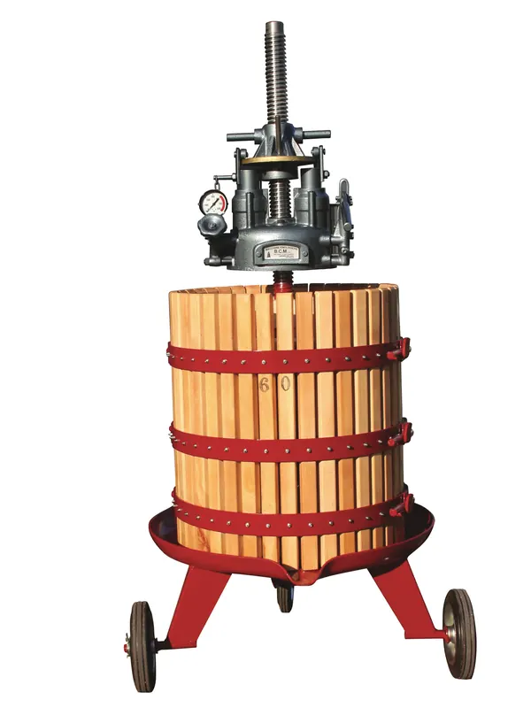
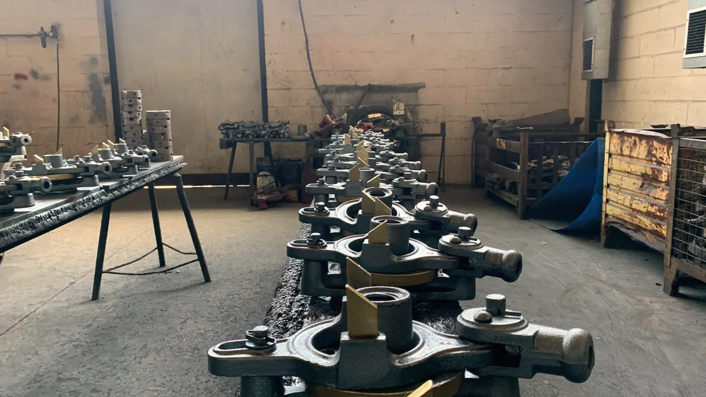
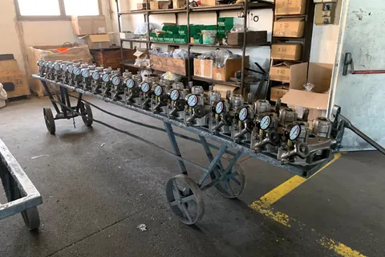

DAVID
Compatibilità con il passato
Torchi, martinetti DAVID, pompe e pigiatrici per l’enologia. Saonara, dal 1960.
Ricambi? Mandaci una fotoRicambi di ogni componente, anche delle macchine vecchie
Da oltre 30 anni teniamo i ricambi e facciamo la manutenzione di ogni singolo componente.
Per trovare il pezzo giusto ci servono tre cose:
- la foto della targhetta della macchina;
- il diametro della gabbia o della vite, se è un torchio;
- la foto del pezzo da cambiare.
Dal lunedì al venerdì, dalle 8 alle 18
Si apre il tuo programma di posta: allega le foto.
Per le altre richieste
Lo stesso numero, 049 640372, dal lunedì al venerdì dalle 8 alle 18, oppure una email.
Preventivo per una macchina nuova
Dicci quale macchina ti interessa: torchio, martinetto, gabbia, pompa o pigiatrice.
Rivenditori ed estero
Spediamo in tutto il mondo. Per maggiori informazioni contattaci direttamente.

Martinetto DAVID, brevettato negli anni 80
Compatibilità con il passato
Va su tutte le tipologie di torchi dal diametro 45 al diametro 100.
Lo sforzo esercitato dall’operatore è minimo. Pressione di esercizio fino a 400 atmosfere. Oggi è un marchio registrato, e lo costruiamo solo noi.
| DAVID | Vite del torchio, mm | Spinta, kg |
|---|---|---|
| A-50 | 45, 50, 55 | 16.000 |
| B-60 | 60, 65 | 22.600 |
| C-70 | 70, 75 | 30.700 |
| D-80 | 80, 85 | 40.000 |
| E-90 | 90, 95, 100 | 50.850 |
Attrezzatura e automazione per l’enologia
 01
01Torchi
Idraulici con la gabbia da 45 a 90 cm, a cricco da 15 a 80 cm, a vite. Faggio stagionato, perni forgiati a caldo.
 02
02Martinetti DAVID
Cinque misure, da A-50 a E-90, per le viti da 45 a 100 mm.
 03
03Gabbie
In faggio, in inox o in PVC, da 15 a 100 cm.
 04
04Pompe Volumex
Acciaio inox AISI 304, girante flessibile in neoprene per uso alimentare. Fino a 250 hl/ora; con il variatore da 0 a 950 hl/ora.
 05
05Pompe con inverter e automazioni
Fino a 300 hl/ora; inverter universale fino a 45 kW.
 06
06Pigiatrici e presse per frutta
Pigiatrici e pigiadiraspatrici da 500 a 1500 kg l’ora, presse e idropressa.

La ditta BCM nasce nel 1960
La fondano i soci Marino Benetazzo e Mario Camerotto.
Siamo una piccola e seria azienda artigianale, composta di varie persone di famiglie che si conoscono tra di loro.
Per i torchi, la scelta del miglior legno di faggio raffinato e stagionato, la forgiatura a caldo dei perni e la sagomatura dei cerchi. Poi abbiamo portato l’automazione sulle nostre pompe.



Cataloghi in quattro lingue
Ogni catalogo è in italiano, tedesco, inglese e francese.
Catalogues in English. Kataloge auf Deutsch. Catalogues en français.